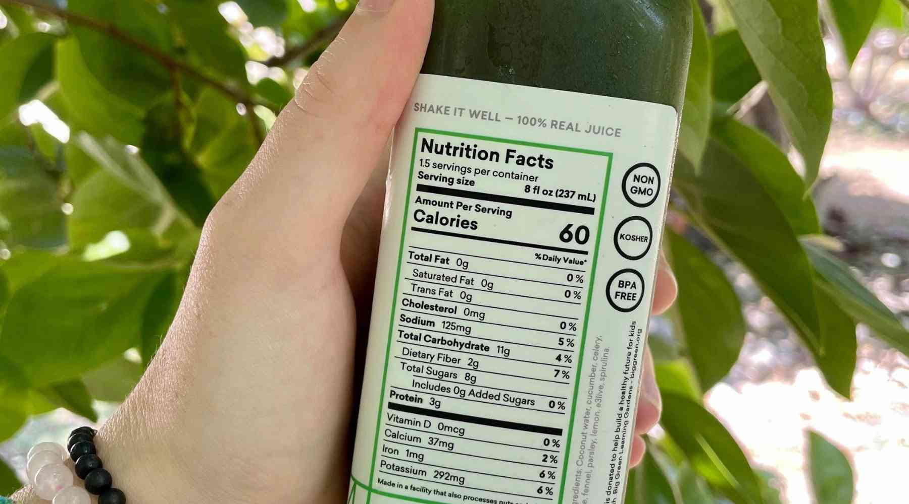

üçé See What's Really Inside Your Food ‚Äî Interact with Nutrition Facts
Despite how common they are, more than half of global consumers report they only "partly" understand nutrition labels. But what if this confusion is more than just a minor inconvenience?
ü§î Could your metabolic health be at risk? An introduction to our dataset.
Nutrition labels are more than just numbers—they directly impact your metabolic health. Currently, 1 in 3 adults has prediabetes, and most don't even realize it.
This dot represents a real person—one participant in a study tracking 45 individuals over 10 days. Each subject belongs to one of three metabolic health groups: Healthy, Pre-Diabetic, or Type 2 Diabetic, with their daily activities, lab values, and metabolic data recorded. How do your nutritional choices and lifestyle compare?
Taking a look at a healthy subject
This dot is one healthy subject from the study. The nutrition label to the right shows the macros for this subject, including how many calories they consumed on this particular day, along with that day's total fat, total carbohydrates, protein, and dietary fiber. Take note of how the information is presented, in both %DV and in the proper units of measurement!
üìä Subject Data: Tracking Metabolic Health
Over a 10-day study, 45 participants were monitored to track key health parameters, including continuous glucose levels, macronutrient consumption, and heart rate. Each dot represents an individual subject, grouped by their metabolic health status. Hover over each dot to see a summary of the collected data. Learn more about the study here.
Diabetics Consumed Fewer Calories on Average
Notice that the previously highlighted subjects all appear on this graph! Try to find them based on the calorie statistics we provieded and see where they fall relative to the other individuals as well!
üîç Explore a food label - Click on highlighted parts for more details.

Moving Forward
Thank you for engaging with our visualization! Hopefully you have gotten the chance to interact with all of the health metric and macros visualizations and have learned something more about how to interpret nutrition labels and take the most away from them!
Remember: nutrition labels are more than just numbers. They are critical for understanding healthy calorie intake, and by taking the time to learn more about them you have taken an important step in maintaining or improving your metabolic health, and by extension, your quality of life!